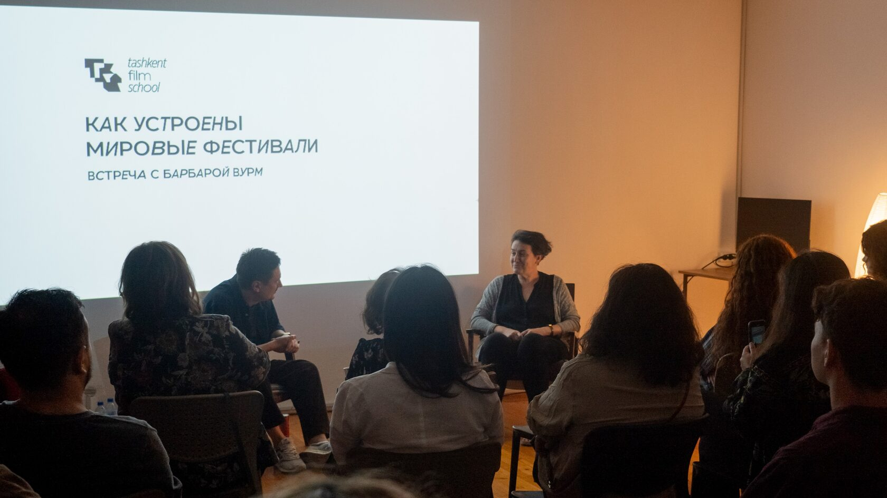

Cinematography as craft
Umida Ahmedova and Sasha Kulak discuss documentary filmmaking, the art of the frame and translating personal ideas into visual stories. Hosted by TFS co-founder Mikhail Borodin.
Conversations, practical guides and research around cinema, authorship and the realities of creative work.
Umida Ahmedova and Sasha Kulak discuss documentary filmmaking, the art of the frame and translating personal ideas into visual stories. Hosted by TFS co-founder Mikhail Borodin.

Shukhrat Tashpulatov explains registration and management of economic rights, with a focus on protecting creative work.
Practical legal tips for working in co-authorship while protecting interests and maintaining productive collaboration.
TFS is described in its own mission as more than a school: a platform for experimentation, community and dialogue.
Platform turns that idea into an editorial layer for talks, guides, screenings and conversations that can remain useful after the event ends.